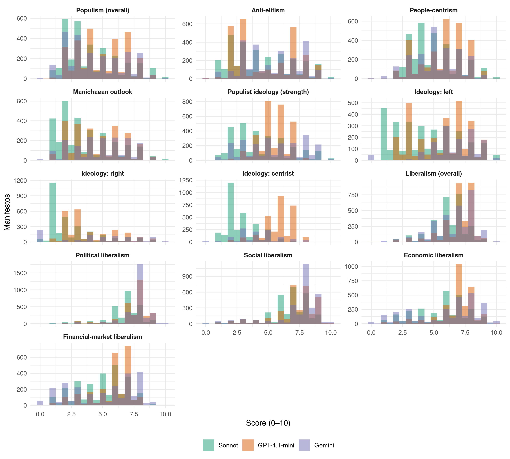

| Dimension | Pair | N | Pearson | Spearman | Mean abs. gap |
|---|---|---|---|---|---|
| Populism (overall) | Sonnet – GPT-4.1-mini | 2822 | 0.78 | 0.77 | 1.16 |
| Populism (overall) | Sonnet – Gemini | 2638 | 0.83 | 0.79 | 0.95 |
| Populism (overall) | GPT-4.1-mini – Gemini | 2581 | 0.67 | 0.67 | 1.38 |
| Anti-elitism | Sonnet – GPT-4.1-mini | 2726 | 0.80 | 0.80 | 1.08 |
| Anti-elitism | Sonnet – Gemini | 2430 | 0.80 | 0.80 | 1.10 |
| Anti-elitism | GPT-4.1-mini – Gemini | 2431 | 0.64 | 0.65 | 1.40 |
| People-centrism | Sonnet – GPT-4.1-mini | 2900 | 0.65 | 0.66 | 1.25 |
| People-centrism | Sonnet – Gemini | 2426 | 0.69 | 0.68 | 1.06 |
| People-centrism | GPT-4.1-mini – Gemini | 2344 | 0.47 | 0.47 | 1.46 |
| Manichaean outlook | Sonnet – GPT-4.1-mini | 2403 | 0.79 | 0.77 | 1.13 |
| Manichaean outlook | Sonnet – Gemini | 1726 | 0.72 | 0.72 | 1.21 |
| Manichaean outlook | GPT-4.1-mini – Gemini | 1604 | 0.59 | 0.59 | 1.44 |
| Populist ideology (strength) | Sonnet – GPT-4.1-mini | 2872 | 0.66 | 0.69 | 1.58 |
| Populist ideology (strength) | Sonnet – Gemini | 2434 | 0.83 | 0.83 | 1.13 |
| Populist ideology (strength) | GPT-4.1-mini – Gemini | 2437 | 0.56 | 0.59 | 1.60 |
| Ideology: left | Sonnet – GPT-4.1-mini | 2755 | 0.86 | 0.87 | 1.35 |
| Ideology: left | Sonnet – Gemini | 1419 | 0.83 | 0.83 | 0.88 |
| Ideology: left | GPT-4.1-mini – Gemini | 1365 | 0.66 | 0.67 | 1.08 |
| Ideology: right | Sonnet – GPT-4.1-mini | 2414 | 0.82 | 0.75 | 1.41 |
| Ideology: right | Sonnet – Gemini | 1047 | 0.87 | 0.89 | 1.26 |
| Ideology: right | GPT-4.1-mini – Gemini | 986 | 0.79 | 0.79 | 1.52 |
| Ideology: centrist | Sonnet – GPT-4.1-mini | 2871 | 0.39 | 0.37 | 3.03 |
| Ideology: centrist | Sonnet – Gemini | 1151 | 0.54 | 0.52 | 1.23 |
| Ideology: centrist | GPT-4.1-mini – Gemini | 1097 | 0.25 | 0.19 | 2.16 |
| Liberalism (overall) | Sonnet – GPT-4.1-mini | 2823 | 0.74 | 0.61 | 1.06 |
| Liberalism (overall) | Sonnet – Gemini | 2938 | 0.90 | 0.86 | 0.75 |
| Liberalism (overall) | GPT-4.1-mini – Gemini | 3109 | 0.71 | 0.59 | 0.87 |
| Political liberalism | Sonnet – GPT-4.1-mini | 2846 | 0.78 | 0.67 | 0.90 |
| Political liberalism | Sonnet – Gemini | 2948 | 0.79 | 0.72 | 0.95 |
| Political liberalism | GPT-4.1-mini – Gemini | 2970 | 0.71 | 0.62 | 0.55 |
| Social liberalism | Sonnet – GPT-4.1-mini | 2838 | 0.84 | 0.79 | 0.84 |
| Social liberalism | Sonnet – Gemini | 2818 | 0.89 | 0.83 | 0.94 |
| Social liberalism | GPT-4.1-mini – Gemini | 2866 | 0.80 | 0.75 | 0.73 |
| Economic liberalism | Sonnet – GPT-4.1-mini | 2646 | 0.75 | 0.75 | 1.35 |
| Economic liberalism | Sonnet – Gemini | 2710 | 0.95 | 0.94 | 0.83 |
| Economic liberalism | GPT-4.1-mini – Gemini | 2842 | 0.69 | 0.70 | 1.48 |
| Financial-market liberalism | Sonnet – GPT-4.1-mini | 2248 | 0.68 | 0.67 | 1.23 |
| Financial-market liberalism | Sonnet – Gemini | 2421 | 0.94 | 0.94 | 0.81 |
| Financial-market liberalism | GPT-4.1-mini – Gemini | 2165 | 0.66 | 0.65 | 1.56 |
Cross-model agreement
Where the three model families converge and where they diverge
Each model is aggregated on its own (counted chunks only, confidence-weighted, as in the paper); the tables compare the three per-manifesto scores. The paper uses their plain mean.
Pairwise correlations by dimension
Largest disagreements on populism
Manifestos where two models differ by more than three points on populism (overall); open one to see which evidence each model cited.
| Manifesto | Country | Party | Year | Sonnet | GPT-4.1-mini | Gemini | Range |
|---|---|---|---|---|---|---|---|
| 14110_201504 | Finland | VL | 2015 | 3.0 | 7 | 1.0 | 6.0 |
| 22320_196702 | Netherlands | PvdA | 1967 | 5.0 | 7 | 1.0 | 6.0 |
| 35310_198010 | Portugal | MDP | 1980 | 9.0 | 9 | 3.0 | 6.0 |
| 63810_198303 | Australia | NPA | 1983 | 6.0 | 7 | 1.0 | 6.0 |
| 22527_199405 | Netherlands | GPV | 1994 | 1.9 | 7 | 3.0 | 5.1 |
| 89940_202405 | North Macedonia | DUI/BDI | 2024 | 2.0 | 7 | 2.0 | 5.0 |
| 11110_201409 | Sweden | MP | 2014 | NA | 6 | 1.0 | 5.0 |
| 11220_201009 | Sweden | V | 2010 | 7.0 | 8 | 3.0 | 5.0 |
| 11320_198209 | Sweden | SAP | 1982 | 5.0 | 7 | 2.0 | 5.0 |
| 11320_201009 | Sweden | SAP | 2010 | 6.0 | 7 | 2.0 | 5.0 |
| 11620_202209 | Sweden | MSP | 2022 | 3.0 | 8 | 3.0 | 5.0 |
| 13210_197312 | Denmark | VS | 1973 | 8.0 | 3 | 8.0 | 5.0 |
| 13229_200711 | Denmark | EL | 2007 | 7.0 | 8 | 3.0 | 5.0 |
| 13230_196409 | Denmark | SF | 1964 | 5.0 | 7 | 2.0 | 5.0 |
| 13230_198709 | Denmark | SF | 1987 | 7.0 | 8 | 3.0 | 5.0 |
| 13230_199803 | Denmark | SF | 1998 | 6.0 | 8 | 3.0 | 5.0 |
| 13230_201906 | Denmark | SF | 2019 | 5.0 | 7 | 2.0 | 5.0 |
| 14223_201104 | Finland | VAS | 2011 | 5.0 | 8 | 3.0 | 5.0 |
| 14223_201904 | Finland | VAS | 2019 | NA | 8 | 3.0 | 5.0 |
| 150062_201910 | Argentina | Together for Change | 2019 | 3.0 | 6 | 1.0 | 5.0 |
| 155021_199912 | Chile | Concert of Parties for Democracy | 1999 | 3.0 | 7 | 2.0 | 5.0 |
| 21320_197403 | Belgium | BSP/PSB | 1974 | 7.0 | 8 | 3.0 | 5.0 |
| 21321_201006 | Belgium | sp.a | 2010 | 3.4 | 7 | 2.0 | 5.0 |
| 22310_197104 | Netherlands | PPR | 1971 | 6.0 | 7 | 2.0 | 5.0 |
| 22320_197705 | Netherlands | PvdA | 1977 | 5.0 | 7 | 2.0 | 5.0 |
| 22320_198605 | Netherlands | PvdA | 1986 | 2.3 | 7 | 2.0 | 5.0 |
| 22321_201703 | Netherlands | DENK | 2017 | 2.0 | 7 | 5.0 | 5.0 |
| 31220_200206 | France | PCF | 2002 | 8.0 | 3 | 7.0 | 5.0 |
| 33430_197903 | Spain | UCD | 1979 | NA | 3 | 8.0 | 5.0 |
| 34210_200709 | Greece | KKE | 2007 | 8.0 | 3 | 8.0 | 5.0 |
| 35210_198304 | Portugal | UDP | 1983 | NA | 3 | 8.0 | 5.0 |
| 35220_198304 | Portugal | PCP | 1983 | 9.0 | 8 | 4.0 | 5.0 |
| 35220_198707 | Portugal | PCP | 1987 | 8.0 | 8 | 3.0 | 5.0 |
| 35311_198304 | Portugal | PS | 1983 | 3.0 | 7 | 2.0 | 5.0 |
| 41320_198303 | Germany | SPD | 1983 | 4.0 | 7 | 2.0 | 5.0 |
| 43220_200310 | Switzerland | PdAS/PdTS | 2003 | 8.0 | 3 | 7.0 | 5.0 |
| 43320_199110 | Switzerland | SPS/PSS | 1991 | 5.0 | 7 | 2.0 | 5.0 |
| 51320_197905 | United Kingdom | Labour | 1979 | 5.0 | 7 | 2.0 | 5.0 |
| 51320_198706 | United Kingdom | Labour | 1987 | 6.0 | 7 | 2.0 | 5.0 |
| 51320_199204 | United Kingdom | Labour | 1992 | 4.0 | 7 | 2.0 | 5.0 |
| 51420_196603 | United Kingdom | Liberal Party | 1966 | 4.0 | 7 | 2.0 | 5.0 |
| 51420_198306 | United Kingdom | Liberal Party | 1983 | NA | 7 | 2.0 | 5.0 |
| 51421_199204 | United Kingdom | LibDems | 1992 | 4.0 | 7 | 2.0 | 5.0 |
| 51901_201505 | United Kingdom | PC | 2015 | 3.0 | 8 | 6.0 | 5.0 |
| 53320_196504 | Ireland | Labour | 1965 | 5.0 | 7 | 2.0 | 5.0 |
| 63320_196910 | Australia | ALP | 1969 | 6.0 | 8 | 3.0 | 5.0 |
| 63320_197512 | Australia | ALP | 1975 | NA | 9 | 4.0 | 5.0 |
| 63330_197405 | Australia | DLP | 1974 | 5.0 | 7 | 2.0 | 5.0 |
| 63810_197405 | Australia | CP | 1974 | 5.0 | 7 | 2.0 | 5.0 |
| 64110_200509 | New Zealand | Greens | 2005 | 3.0 | 7 | 2.0 | 5.0 |
| 72071_201904 | Israel | United Right | 2019 | 3.0 | 8 | NA | 5.0 |
| 84450_202410 | Georgia | KO-DS | 2024 | NA | 2 | 7.0 | 5.0 |
| 86220_200204 | Hungary | MSzP | 2002 | 4.0 | 7 | 2.0 | 5.0 |
| 87071_202210 | Latvia | National Alliance ‘All For Latvia!’ – ‘For Fatherland and Freedom - Latvian National Independence Movement’ | 2022 | 2.0 | 7 | NA | 5.0 |
| 89911_201612 | North Macedonia | DR-DPA/LR-PDSH | 2016 | 3.0 | 6 | 1.0 | 5.0 |
| 96711_200606 | Slovakia | HZDS | 2006 | 2.0 | 7 | 4.5 | 5.0 |
| 98221_199404 | Ukraine | KPU | 1994 | 8.0 | 3 | 8.0 | 5.0 |
| 98221_200709 | Ukraine | KPU | 2007 | 9.0 | 4 | 8.0 | 5.0 |
| 23113_201310 | Luxembourg | The Greens | 2013 | 2.3 | 7 | 2.5 | 4.7 |
| 160061_201405 | Panama | AEPP | 2014 | 3.4 | 8 | NA | 4.6 |
273 manifestos in total; the 60 largest gaps are listed.
Score distributions
